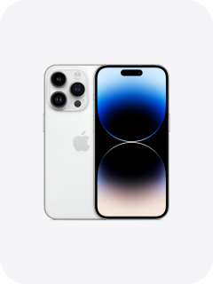

Что нового
Все модели оснащены однокристальной системой A16 Bionic, 48-мегапиксельной основной камерой и экранами ProMotion с защитой Ceramic Shield и частотным диапазоном 1 — 120 Гц, а также ускоренной памятью LPDDR5. Дизайн линейки обновлен, на фронтальной панели смартфонов два выреза.
Все iPhone 14 в США будут продаваться без лотка для SIM-карт: производитель заявляет, что улучшенная технология eSIM позволит перенести старые электронные сим-карты на новые смартфоны.
Обновлены фронтальная камера (она снабжена автофокусом и быстрее распознает пользователя в условиях недостаточной освещенности) и сенсор основной камеры.
iPhone 14 Pro вышел в новом дизайне — без фирменной «челки». Также в ассортименте появился новый цвет. В смартфоне, в отличие от «обычных» 14-х айфонов, установлен процессор A16 Bionic, который может за секунду производить 4 трлн операций с фото.
Выбери свой цвет
-

Silver
Серебристый
-

Deep purple
Темно фиолетовый
-

Gold
Золотой
-

Space Black
Космический черный